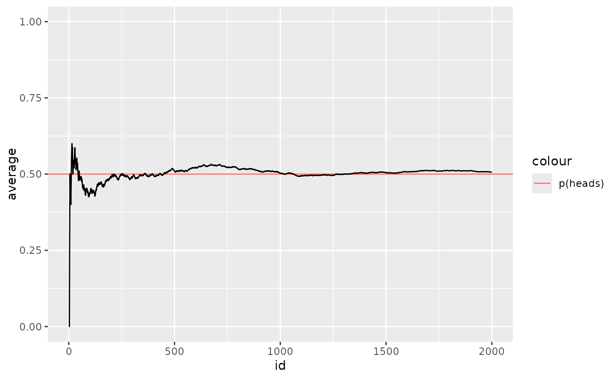

A data set containing 2,000 trials of coin flips from statistician John Edmund Kerrich's 1940s experiments while imprisoned by the Nazis during World War Two.
data(kerrich)A data frame with 1216 rows and 21 variables:
trial
outcome of each trial; TRUE = heads, FALSE = tails
cumulative mean of outcomes
https://stats.stackexchange.com/questions/76663/john-kerrich-coin-flip-data/77044#77044
https://books.google.com/books/about/An_experimental_introduction_to_the_theo.html?id=JBTvAAAAMAAJ&hl=en
https://en.wikipedia.org/wiki/John_Edmund_Kerrich
str(kerrich)
#> 'data.frame': 2000 obs. of 3 variables:
#> $ id : num 1 2 3 4 5 6 7 8 9 10 ...
#> $ outcome: logi FALSE FALSE FALSE TRUE TRUE TRUE ...
#> $ average: num 0 0 0 0.25 0.4 ...
if (require("ggplot2")) {
ggplot(data = kerrich) +
geom_hline(mapping = aes(yintercept = .5, color = "p(heads)")) +
geom_line(mapping = aes(x = id, y = average)) +
ylim(0,1)
}
#> Loading required package: ggplot2
